数据来源：知识星球「南半球聊财经」星主 Jason 不跪当天发帖（美西时区 2026-07-18）。本报告逐帖做通俗解读并解读配图，帮助系统积累宏观/财经认知。
当天 Jason 不跪发帖数量：10 篇
今日要点速览
今天 Jason 的帖子集中在三条主线。第一条是中国房地产：他连发两帖，一是转 JPM（摩根大通）请「冰山指数」专家做的二手房展望——判断房价从「急跌」转「缓跌」、2026 年上海领跑一线「软企稳」、全国仍在跌但跌幅收窄；二是中指院上半年土地市场数据，供地和土地出让金继续大幅缩量。第二条是地缘冲突：他转了 zerohedge 关于美伊战争升级（连续第七天轰炸、科威特能源设施被打）的长报道，并配了贝莱德、高盛对「全球碎片化」的判断。第三条是资产配置与央行：贝莱德未来 6–12 个月最看好美股、回避长债；美银展示「四分法组合」2026 年年化 16% 的强回报；高盛测算中国 5 月买了 48 吨黄金创一年多新高；欧央行可能推迟加息、美联储偏鹰。最后他用一张自制图表点出中国居民、中央、地方三个部门债务收入比都在高位，居民部门上半年降至 128.4%，但缩减空间仍大。
一句话串起来：内需（房地产、居民去杠杆）仍在磨底，外部（战争、阵营分化）风险抬升，机构在这种环境下继续押注美股+黄金+分散化组合。
帖子 1 · JPM 冰山指数：二手房「K 型企稳」在望
时间：2026-07-18 · 标签：#房价# · 配图：4 张（JPM 报告原文 + 图表）
帖子原文
JPM：我们邀请冰山指数专家讨论近期二手房市场及 2026 年下半年、2027 年的展望。专家整体上对二手房成交量较为乐观，但房价尚未进入全面上涨阶段，只是从此前的"急跌"转为"缓跌"。预计 2026 年一线城市房价出现"软企稳"，主要由上海带动；全国房价 2026 年仍处于下行趋势，但跌幅会收窄；如果去库存顺利，更多核心城市可能在 2027 年触底。专家认为，这一次与过去最大的区别在于成交量回升的同时，房价跌幅没有继续扩大。冰山 40 城二手房实际成交均价指数高点约为 22,158；2026 年 6 月降至约 12,962；累计下跌约 41%。专家据此判断全国房地产的大部分估值泡沫已经被挤出；未来可能仍会下跌；但继续下跌的空间可能不足 9%，即不太可能显著跌破 2014—2015 年的水平。我们对专家这个观点保持谨慎看待。#房价#
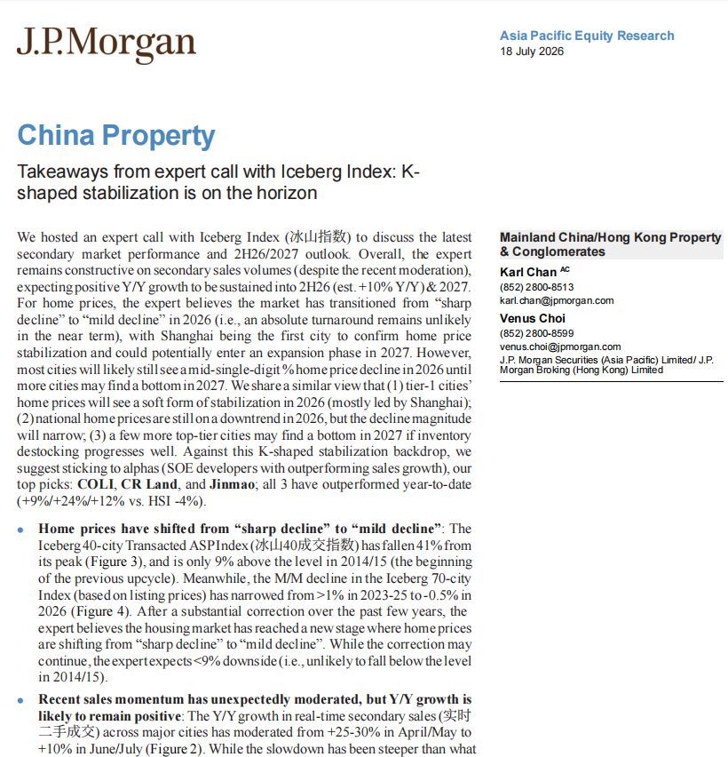
一句话核心：摩根大通引用「冰山指数」专家观点，认为中国二手房正从「急跌」转入「缓跌」，2026 年一线（尤其上海）软企稳，泡沫大部分已挤出、再跌空间有限（<9%）。
背景与关键数据
- 冰山指数是民间机构基于挂牌/成交数据编制的二手房价格指数，因为盯的是真实市场，通常比官方统计更敏感、更「贴地」。
- 实际成交均价指数从 22,158 跌到 12,962，累计 −41%：这是把 40 个城市的真实成交价加权后的指数点位（不是元/平米房价），意思是过去这一轮，二手房成交价整体腰斩了约四成。
- 「K 型企稳」：K 字有一撇向上、一捺向下——指市场分化。便宜的、核心地段的房子先止跌回暖，贵的、外围的继续阴跌，不是所有房子一起涨。
- JPM 的操作建议：看好三只国企开发商——中海（COLI）、华润置地（CR Land）、金茂（Jinmao），年内已跑赢恒生指数（+9%/+24%/+12% vs 恒指 −4%）。
图片解读
- 图 1（报告封面）：J.P. Morgan《China Property》报告，标题「K-shaped stabilization is on the horizon（K 型企稳在望）」，日期 2026 年 7 月 18 日。正文确认了帖子的核心判断：房价从 sharp decline 转 mild decline，上海率先企稳，再跌空间 <9%（不太可能跌破 2014/15 水平）。
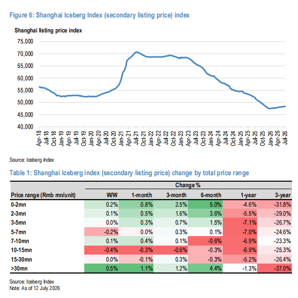
- 图 3（上海二手挂牌价指数 + 分价位涨跌表）：折线是上海挂牌价指数，2021 年 7 月见顶约 70,000，一路跌到 2026 年中约 48,000，近几个月曲线明显走平、末端微翘——这是「企稳」的直接证据。下面的表格按总价分档看涨跌：低总价（0–2 百万）近 6 个月 +5.0%、近 1 月 +0.8%，明显转正；而中高价位（10–15 百万）近 3 个月还是 −0.6%。这就是「K 型」——便宜的先回暖，贵的还在跌。
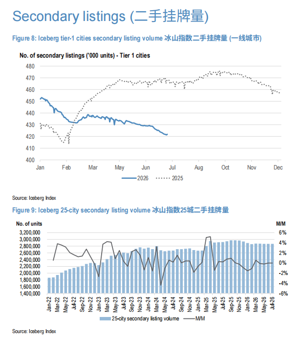
- 图 8/9（二手挂牌量）：图 8 是一线城市二手挂牌套数，2026 年（实线）从年初约 45 万套降到 7 月约 42 万套，低于 2025 年（虚线）。挂牌量下降＝愿意卖的人变少＝供给收缩，这通常是价格见底的前兆（抛压减轻）。图 9 是 25 城挂牌总量，长期看仍在高位（约 280–300 万套）。
为什么重要 / 对市场和经济的含义 房地产是中国居民资产的大头（占家庭财富约六成），也牵连地方财政、银行、上下游产业。房价「止跌企稳」是 2024 年以来最高级别的政策目标之一。如果 JPM/冰山的判断成立——成交量回升但价格跌幅收窄——意味着最恐慌的下跌阶段过去了，对消费信心、银行资产质量、开发商现金流都是利好。但 Jason 特意加了一句「我们对专家这个观点保持谨慎看待」，提醒读者：机构的乐观判断常有卖方立场，「软企稳」和「真反转」是两回事。
延伸知识
- 量在价先：房地产（和股票）有个经验规律，成交量往往领先价格见底。逻辑是——愿意割肉的卖家先被消化掉，成交放大说明有资金愿意在低位接盘，价格随后才慢慢稳住。所以看楼市拐点，先看成交量和挂牌量的变化，而不是只盯价格。
- 为什么是「上海领跑」：一线城市里，上海的产业、人口、购买力最扎实，核心地段稀缺性最强，因此在下行周期里最抗跌、在企稳时最先反弹。历史上每一轮楼市回暖，几乎都是一线核心先动、再向二三线传导。
帖子 2 · 中指院：上半年土地市场「缩量提质」
时间：2026-07-18 · 标签：#TAX# · 配图：1 张（300 城土地成交与出让金）
帖子原文
中指院：上半年，在"控增量"政策导向下，地方政府供地延续"缩量提质"基调，叠加房企拿地审慎，300 城住宅用地推出、成交面积同比分别下降 21%、24%，土地出让金下降 31%。#TAX#
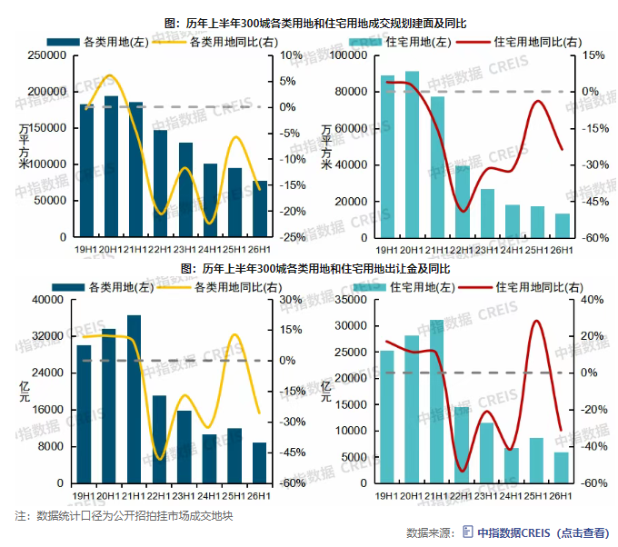
一句话核心：2026 上半年地方政府少卖地、房企少拿地，住宅用地成交面积同比 −24%、土地出让金 −31%，土地市场继续深度收缩。
背景与关键数据
- 土地出让金＝地方政府卖地收入，长期是地方财政的「命根子」（高峰期能占地方政府性基金收入的九成、占地方综合财力的三成以上）。它 −31%，意味着地方财政缺口进一步扩大。
- 「控增量」「缩量提质」：官方主动减少土地供应，避免新房越盖越多、库存去化更难——本质是「供给侧收缩」来配合去库存。
- 300 城是中指院跟踪的样本口径，覆盖全国主要城市，是观察土地市场的常用指标。
图片解读 四张柱状图分别是「各类用地 / 住宅用地」×「成交建面 / 出让金」的历年上半年对比。柱子（左轴，绝对量）从 2020–2021H1 的高峰一路回落到 2026H1；叠加的折线（右轴，同比）大多在 0 轴以下。右上「住宅用地同比」的红线在 26H1 落在约 −24% 一带，右下「住宅用地出让金同比」也深陷负值区——直观展示了「量、价、钱」三条线同步下台阶。
为什么重要 / 对市场和经济的含义 土地市场是房地产的「上游」：地卖不动 → 地方没钱 → 基建/公共支出承压；房企不拿地 → 未来 1–2 年新房供给继续减少。这和帖子 1 的逻辑其实是一体两面——供给主动收缩，是为二手房「企稳」创造条件。但代价是地方财政持续吃紧，这也是为什么市场一直在讨论「地方化债」和财政转移支付。
延伸知识
- 土地财政：过去二十年，中国很多地方靠「低价征地、高价卖地」滚动融资搞城建，形成了对卖地收入的深度依赖。当楼市下行、地卖不动，这套模式就转不动了，倒逼财政体制改革（比如消费税下划、发行特别国债补窟窿）。理解「土地出让金 −31%」，就理解了当前地方债务问题的源头之一。
帖子 3 · zerohedge：美伊战争再度升级
时间：2026-07-18 · 标签：#金融# · 配图：9 张（zerohedge 长报道截图 + 科威特地图）
帖子原文
zerohedge：战争再度升级 #金融#
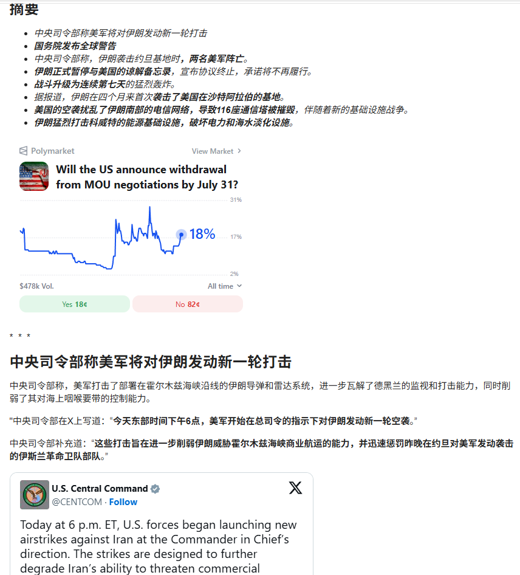
一句话核心：美伊冲突大幅升级——美军对伊朗发动新一轮空袭（连续第七天），2 名美军在约旦基地阵亡，伊朗暂停与美和解备忘录（MOU）、并首次袭击美国在沙特的基地、打击科威特能源设施，霍尔木兹海峡航运受阻。
背景与关键数据（据 zerohedge 报道原文）
- 美国中央司令部（CENTCOM）称美军打击了部署在霍尔木兹海峡沿线的伊朗导弹和雷达系统。
- 美国务院发布全球警告；伊朗正式暂停与美国的谅解备忘录（MOU），宣布承诺不再履行。
- 美军空袭致伊朗南部 116 座通信塔被摧毁，固话/移动/互联网中断。
- 伊朗猛烈打击科威特电力和海水淡化设施，另配一张科威特设施分布地图。
- Polymarket 预测盘「美国是否在 7 月 31 日前宣布退出 MOU 谈判」报价约 18%。
图片解读
- 图 1：zerohedge 文章开头的「摘要」清单，逐条列出升级事件；下方嵌了 Polymarket 预测市场截图（18% 概率）。预测市场是用真金白银下注的「群众赔率」，18% 说明市场目前不认为美国会很快彻底退出谈判——即冲突虽烈，但完全撕破脸的概率还不高。
- 图 6：报道后半段，重点讲美国摧毁伊朗南部通信基础设施（116 座电信塔）、伊朗反击科威特能源设施；配一张科威特地图，用方块标出污水处理厂、三角标出海水淡化厂（Sabiya、Doha、Shuaiba、Zour 等），显示被打击目标集中在波斯湾沿岸的关键民生/能源节点。
为什么重要 / 对市场和经济的含义 霍尔木兹海峡是全球约五分之一原油、大量 LNG 的必经水道，一旦航运受阻，油气价格会飙升。这正好和后面帖子 4（欧央行因能源价格飙升而两难）、帖子 9（黄金避险买盘）形成呼应——战争 → 能源涨价 → 通胀黏住 → 央行难降息 → 避险资产（黄金）受益，这是一条完整的宏观传导链。Jason 把这条战争新闻放在一堆机构研报中间，就是在提示读者：地缘是当前所有资产定价绕不开的变量。
延伸知识
- 地缘冲突的「油价—通胀—利率」链条：历史上 1973 石油危机、1990 海湾战争、2022 俄乌冲突，都是「地缘事件 → 油价跳涨 → 通胀上行 → 央行被迫维持高利率或加息」。对投资者而言，能源和黄金是这条链上的「对冲工具」。
- 预测市场（Polymarket）：用户用真钱押注事件结果，价格＝市场隐含概率。它常比民调/专家更快反映信息，是近年越来越被引用的「实时舆情温度计」，但也会被情绪和流动性扭曲，只能当参考。
帖子 4 · 欧央行或推迟加息，美联储偏鹰
时间：2026-07-18 · 标签：#金融# · 配图：4 张（ECB 鹰鸽分布图 + 报道正文）
帖子原文
bloomberg：欧洲央行可能会在下周推迟第二次加息，但据希腊央行行长雅尼斯·斯图尔纳拉斯称，霍尔木兹海峡的船只交通问题和冲突的重新爆发，使他们回到了原点。另一边美联储最近对通胀依然表示零容忍，偏向鹰派。#金融#
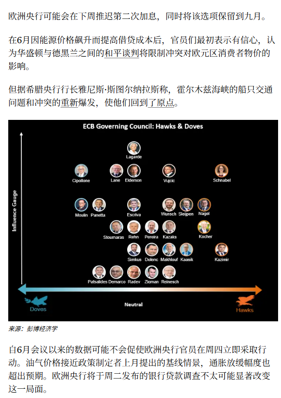
一句话核心：欧央行（ECB）可能推迟第二次加息，但因霍尔木兹海峡冲突推升能源价格，通胀前景又回到原点；美联储（新主席 Warsh 一线）对通胀「零容忍」，同样偏鹰。
背景与关键数据
- 鹰派 vs 鸽派：鹰派＝更担心通胀、倾向加息/维持高利率；鸽派＝更担心增长/就业、倾向降息。
- ECB 6 月已因能源价格飙升而加息一次，本计划下周再看要不要第二次加息；但战争让能源前景不确定，「回到原点」＝又拿不准了。
- 美联储这边（据配图正文）新主席**沃什（Kevin Warsh，报道称由特朗普选中）**明确表态「对通胀零容忍」，副主席杰斐逊称若通胀不快降不排除加息，纽约联储威廉姆斯认为「通胀已见顶」——内部有分歧但整体偏鹰。
图片解读
- 图 1（ECB 理事会鹰鸽矩阵，彭博经济学制作）：纵轴是「影响力」，横轴从左（鸽 Doves）到右（鹰 Hawks）。拉加德（Lagarde，行长）居中偏上（影响力最大）；施纳贝尔（Schnabel）、纳格尔（Nagel）在右上＝高影响力的鹰派；左下角一批小国央行行长偏鸽。这张图一眼看出决策天平——影响力大的成员偏鹰，意味着 ECB 短期更可能维持偏紧。
- 图 2（正文）：讲美联储进入 7 月议息「静默期」前，官员集中表态，分歧明显：有人喊「急需行动」，有人说「还能等数据」。
为什么重要 / 对市场和经济的含义 两大央行同时偏鹰（不急于降息、甚至可能加息），对资产价格的含义是：利率维持高位 → 长久期债券承压、成长股估值受限、现金/短债有吸引力。这直接解释了下面帖子 6（贝莱德回避长债）、帖子 7（现金和大宗都有正回报）的配置逻辑。
延伸知识
- 央行「鹰鸽」为什么重要：短端利率由央行决定，而利率是几乎所有资产定价的「锚」。央行偏鹰 → 折现率高 → 未来现金流「打折」更狠 → 高估值成长股和长债最受伤。所以盯央行表态，本质是盯资产定价的「地心引力」在变强还是变弱。
帖子 5 · 财新：深圳旧改里的「审批权套利」
时间：2026-07-18 · 标签：#TAX# · 配图：1 张（财新报道）
帖子原文
财新：剖析马老板怎么搞钱。深圳旧改最大的资源，不是钱，而是审批权。然后白/手/套/王占江负责商业化变现。过程中各种大佬、国企站台，最后一倒手，也不用真的去做就能捞钱 #TAX#
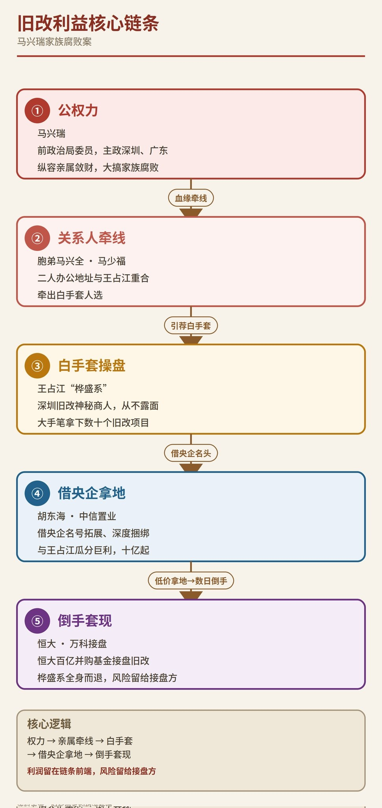
一句话核心：财新调查报道揭示深圳城市更新（旧改）中的灰色套利——核心资源是「审批权」而非资金，通过白手套将审批权商业化变现，靠倒手项目就能获利。
背景与关键数据
- 城市更新 / 旧改：把老旧城中村、旧厂房拆掉重建，涉及巨大的土地增值。谁能拿到「更新单元」的立项、规划审批，谁就掌握了变现的钥匙。
- 「审批权是最大资源」：Jason 引用报道点出问题本质——在土地和资金都过剩的深圳，稀缺的是行政许可，这就给权力寻租留了空间。
- 「白手套」：指替真正的操盘者出面、代持或代为交易的中间人，用来隔离风险、掩盖真实受益人。
图片解读 图为财新报道页面截图，标题聚焦深圳旧改的运作链条：审批权 → 商业化变现 → 各方站台 → 倒手获利。（涉及具体人名，此处按报道客观转述，不做额外指认。）
为什么重要 / 对市场和经济的含义 这条和土地财政（帖子 2）是同一主题的另一面：当土地/房产是核心财富来源时，围绕它的「审批权」就成了寻租高发区。理解这类报道，有助于看清中国房地产不仅是经济问题，也牵涉制度与治理。对投资者的启示是——涉及大量行政审批、政商关系复杂的行业（旧改、基建特许经营等），既有超额收益，也有极高的政策与合规风险。
延伸知识
- 寻租（rent-seeking）：经济学概念，指不创造新价值、而是通过操纵政策/许可去攫取已有财富的行为。审批权套利就是典型——项目本身没增值多少，靠「批文」倒手就能赚差价。一个经济体寻租越多，整体效率越低，这也是反腐和「放管服」改革要解决的核心问题之一。
帖子 6 · 贝莱德：未来 6–12 个月资产排序
时间：2026-07-18 · 标签：#金融# · 配图：1 张（贝莱德资产配置表）
帖子原文
贝莱德算命，未来 6-12 个月最看好的资产排序。继续押注美国股票，回避长久期债券，开始增加欧洲债券和新兴市场本币债，对中国维持中性。#金融#
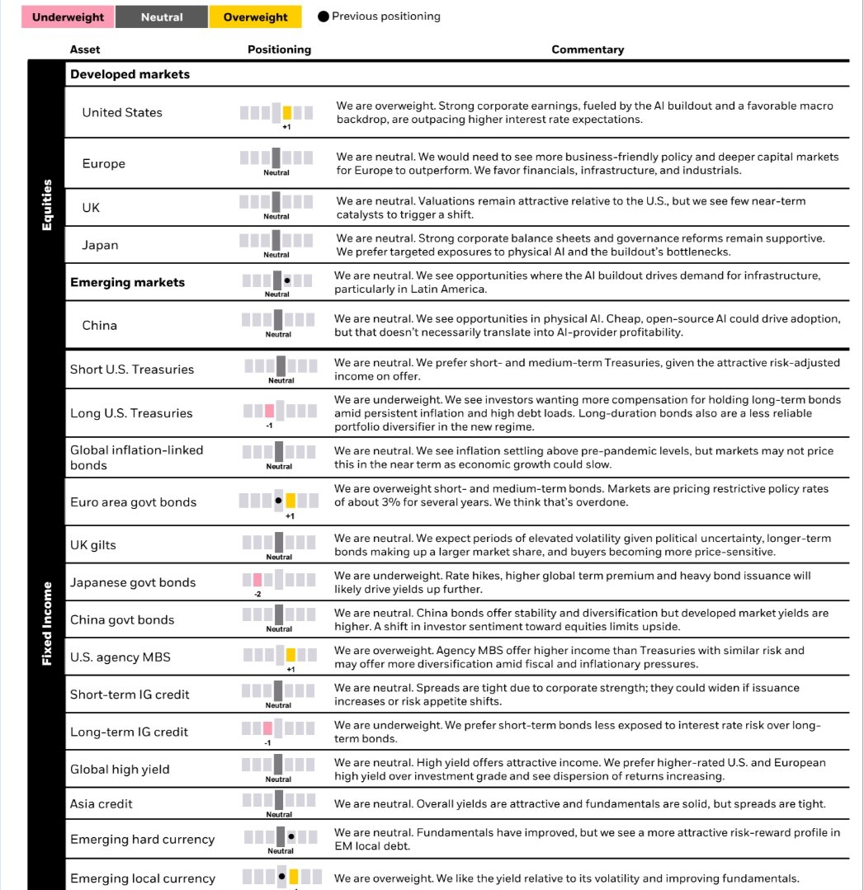
一句话核心：全球最大资管贝莱德给出未来 6–12 个月配置观点——超配美股、超配欧元区政府债和新兴市场本币债、超配美国 MBS；低配美国长债和日本国债；对中国、欧洲股票中性。
背景与关键数据（超配 overweight / 中性 neutral / 低配 underweight）
- 股票：美国 +1 超配（AI 资本开支推动企业盈利强劲）；欧洲、英国、日本、新兴市场、中国均中性。
- 债券：美国长债 −1 低配（通胀黏、债务高，长债作为「分散器」失灵）；欧元区政府债 +1 超配（市场把政策利率定得太高，有修复空间）；日本国债 −2 低配（加息+发债多，收益率还要上）；美国机构 MBS +1 超配；新兴市场本币债超配。
图片解读 这是贝莱德的「战术配置」看板：每行一个资产，中间的色块条显示超配（黄）/中性（灰）/低配（粉），黑点是「上期仓位」，右边是理由。一眼扫下来——黄色（超配）集中在美股、欧债、MBS、EM 本币债；粉色（低配）集中在美国长债、日债、长期投资级信用债。核心信息：要收益去美股，要利息去中短债和 MBS，别碰长久期。
为什么重要 / 对市场和经济的含义 贝莱德管着十几万亿美元，它的配置观点本身就是「市场共识」的风向标。这份表和帖子 4（央行偏鹰）逻辑自洽：利率高企 → 回避对利率最敏感的长债 → 拥抱盈利强的美股和有票息保护的中短债。「对中国中性」也值得注意——不看空但也不加码，反映外资对中国资产「便宜但缺催化剂」的普遍态度。
延伸知识
- 久期（duration）：衡量债券价格对利率变动敏感度的指标，久期越长，利率一涨、债价跌得越狠。「回避长久期债券」就是怕利率维持高位甚至再升，长债被「杀估值」。
- 长债作为「分散器」失灵：传统「股债对冲」（股跌债涨）在低通胀时管用；但当通胀成为主要风险时，股债可能同跌（2022 年就是），长债不再能对冲股票风险——这就是贝莱德说长债「是新体制下不那么可靠的分散工具」的意思。
帖子 7 · 美银：四分法组合 2026 年年化 16%
时间：2026-07-18 · 标签：#金融# · 配图：1 张（BofA 历年回报柱状图）
帖子原文
BOFA：25% 组合（25% 标普 500 + 25% 美国 10 年期国债 + 25% 大宗商品 + 25% 现金），自 1926 年以来，每年的收益。分别对应，股票：AI 投资推动，美股继续上涨；现金：高利率环境下，现金本身就有不错收益；大宗商品：能源、金属等商品上涨贡献很大；债券：虽然长期来看他仍然对债券偏谨慎，但在 2026 年阶段性行情中，债券也提供了正回报。#金融#
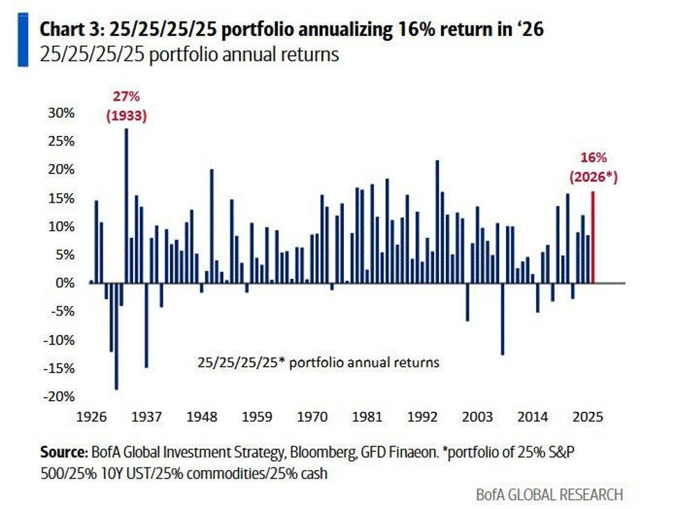
一句话核心：美银展示一个「25% 股 + 25% 十年美债 + 25% 大宗 + 25% 现金」的四等分组合，2026 年年化约 16%，四大类资产今年全部贡献正回报。
背景与关键数据
- 这是一种极简的「全天候 / 四象限」组合：股票（增长）、债券（通缩对冲）、大宗（通胀对冲）、现金（流动性/防守）各占四分之一。
- 2026 年 +16% 在历史上属于偏强的年份（图中最高是 1933 年的 27%）。四类同涨的原因：AI 推动股票、高利率让现金有息、能源金属涨推大宗、阶段性行情让债券也正收益。
图片解读 柱状图是该组合 1926 年以来每年的回报。绝大多数柱子在 0 轴以上（说明这种分散组合长期胜率高、极端亏损少）；最左 1933 年 +27% 是历史最佳；最右红色柱标注 2026≈16%*。这张图的说服力在于：即便在战争、高通胀、高利率并存的 2026 年，一个「什么都买一点」的傻瓜组合也能拿到 16%——分散化的力量。
为什么重要 / 对市场和经济的含义 它和贝莱德那张表是「一体两面」：贝莱德讲主动取舍（超配谁、低配谁），美银讲被动分散（四类各 25%）也能赢。共同点是——当前环境下现金和大宗不再是「拖后腿」的资产，反而是组合的稳定器。这颠覆了过去十年「现金是垃圾、只买股票」的思维。
延伸知识
- 全天候组合（All-Weather）：由桥水基金达里奥推广，核心思想是「不预测宏观，用资产分散来抵御任何经济环境」——增长好时股票赚、衰退时债券赚、通胀时大宗和黄金赚。美银这个「四个 25%」是它的极简版。适合不想择时、追求平稳复利的普通投资者理解风险分散的价值。
帖子 8 · 高盛：全球「碎片化」还将持续
时间：2026-07-18 · 标签：#金融# · 配图：1 张（地缘风险与阵营指数）
帖子原文
高盛：过去 5—10 年，全球不仅地缘政治风险上升，而且国家之间的阵营分化也明显加深；我们预计这种"碎片化"趋势到 2030 年前还会继续。"fragmentation"，不只是战争更多，而是贸易、资本、技术、能源、供应链和金融体系，都开始按照政治阵营重新划分。对经济和投资意味着什么？第一，全球化效率下降；第二，政府和企业资本开支增加；第三，跨境资产估值会出现政治折价；第四，中间国家可能成为受益者 #金融#
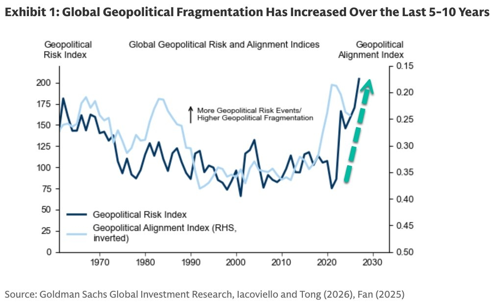
一句话核心：高盛判断全球正在「碎片化」——贸易、资本、技术、能源、供应链、金融都按政治阵营重新站队，趋势到 2030 年前还会继续，并给出四点投资含义。
背景与关键数据
- 碎片化（fragmentation）：全球化的「逆过程」。过去几十年世界越来越连成一体（谁便宜找谁买），现在则「脱钩」「友岸外包」，按政治盟友关系重组供应链。
- 高盛的四点推论：①全球化效率下降（东西变贵）；②政府和企业资本开支上升（要重建本土/盟友产能）；③跨境资产出现「政治折价」（敌对阵营的资产估值被压低）；④「中间国家」受益（如越南、墨西哥、印度这些能左右逢源的国家）。
图片解读 图为高盛「全球地缘政治风险与阵营指数」：深蓝线是地缘政治风险指数（越高＝冲突事件越多），浅蓝线是阵营对齐指数（右轴倒置，越往上＝分化越严重）。两条线在 2020 年后都急速上冲，末端一个绿色大箭头指向 2030，直观表达「风险和分化还要继续升」。这张图给帖子 3 的战争新闻提供了「大趋势」背景——不是孤立事件，而是碎片化时代的常态。
为什么重要 / 对市场和经济的含义 碎片化是理解未来十年的关键框架：它意味着长期通胀中枢更高（效率损失+重复建设）、资本开支超级周期（国防、能源、供应链回流）、估值分化（安全资产溢价、敌对资产折价）。这也是为什么机构普遍看好美股（受益于资本回流+AI）、黄金（去美元化+避险）和「中间国家」的原因。
延伸知识
- 友岸外包（friend-shoring）：把供应链从「成本最低的地方」搬到「政治上可信赖的盟友」那里。比如美国把部分芯片、制造从中国转向墨西哥、越南、印度。它牺牲效率换安全，是碎片化最具体的表现，也是「中间国家受益」的来源。
- 去全球化 ≠ 完全断裂，更像是「多中心化」——世界分成几个各自抱团的经济圈，圈内深度融合、圈间竖起壁垒。投资上要问的问题从「哪家公司最赚钱」变成「它站在哪个圈、会不会被政治折价」。
帖子 9 · 高盛：中国 5 月买了 48 吨黄金
时间：2026-07-18 · 标签：#金融# · 配图：1 张（中国购金测算图）
帖子原文
高盛：我们估算中国 5 月份通过伦敦场外交易市场购买了 48 吨黄金，这是过去一年多以来最大的单月购买量。也是中国央行 5 月份官方公布增持 10 吨黄金的 4.8 倍。与此同时，中国央行 6 月份又官方增持了 15 吨黄金，创至少两年半以来最大单月增持量，同时也是连续第 20 个月增加黄金储备。2026 年以来，中国官方公布的黄金储备累计增加约 40 吨。即使采用更保守的估算——实际购买量是官方数据的 2 倍——也意味着中国 2026 年至今实际可能已经累计购买了接近 80 吨黄金。#金融#
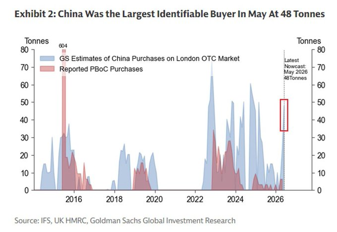
一句话核心：高盛测算中国 5 月经伦敦场外市场买了 48 吨黄金（是官方披露 10 吨的 4.8 倍），实际购金量可能远超官方公布，2026 年至今实际或已买近 80 吨。
背景与关键数据
- 场外交易市场（OTC）：不通过公开交易所、买卖双方私下撮合的市场。央行大额购金常走 OTC 以避免推高价格、也不必即时披露。
- 官方 10 吨 vs 高盛估 48 吨：官方每月公布的黄金储备增量，可能只是实际购买的一部分——这就是「藏金于市」的说法，央行实际买得比账面多。
- 连续第 20 个月增持、6 月又 +15 吨（两年半最大单月）：说明中国央行在持续、坚定地增加黄金储备。
图片解读 图为高盛 Exhibit 2：蓝色面积是「高盛估算的中国在伦敦 OTC 购金量」，红色是「官方公布的央行购金量」。蓝色明显、且经常远高于红色，尤其 2022 年后蓝色大幅放量；最右一个红框标注「最新预测：2026 年 5 月 48 吨」。这张图一眼说明两件事：①中国实际买金远多于官方数字；②购金潮在近几年显著加速。
为什么重要 / 对市场和经济的含义 央行持续大买黄金是**「去美元化」和避险**的直接信号。在碎片化（帖子 8）+ 战争（帖子 3）+ 高债务（帖子 10）的背景下，黄金作为「无信用风险、无国界」的储备资产吸引力上升。中国带头增持，是黄金牛市的重要长期支撑之一——这也和美银组合里大宗商品贡献正回报（帖子 7）相互印证。
延伸知识
- 为什么央行囤金：黄金不是任何国家的负债（不像美债是美国的欠条），不会被冻结/制裁（2022 年俄罗斯外储被冻结后，各国央行更警惕美元资产的政治风险）。所以在地缘紧张时期，央行用黄金替代部分美元储备，既分散风险又「去美元」。
- 金价的两大驱动：短期看实际利率（利率降、持金机会成本低，金价涨）；长期看央行购金和去美元化趋势。当前是「央行结构性买盘」压过「高利率利空」，所以金价在高利率环境里依然坚挺——这是理解本轮黄金行情的关键。
帖子 10 · 自制图表：三部门债务收入比都在高位
时间：2026-07-18 · 标签：#自制图表# · 配图：1 张（Jason 自制债务收入比图）
帖子原文
估算上半年，中国居民部门债务收入比下降至 128.4%，仍然有缩减空间 #自制图表#
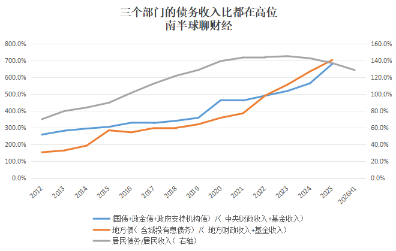
一句话核心：Jason 自制图表显示中国居民、中央、地方三个部门的「债务收入比」都在历史高位，居民部门 2026 上半年降至 128.4%，但相比国际水平仍有下降（去杠杆）空间。
背景与关键数据
- 债务收入比＝某部门的债务 ÷ 该部门的收入，衡量「借的钱相对赚的钱有多重」。128.4% 意思是居民欠的债约为其年收入的 1.28 倍。
- 图中三条线：蓝＝中央政府（国债+政金债+政府支持机构债 ÷ 中央财政收入+基金收入）；橙＝地方政府（含城投有息债务 ÷ 地方财政收入+基金收入）；灰＝居民（居民债务 ÷ 居民收入，看右轴）。
- 居民从约 140% 高点回落到 128.4%：这是居民在「去杠杆」——提前还房贷、少借新债，是过去两年的重要现象。
图片解读 图标题「三个部门的债务收入比都在高位」。橙线（地方政府）最陡，从 2012 年约 150% 一路飙到 2025 年约 700%（左轴），反映城投债务的膨胀；**蓝线（中央）**同期从约 250% 升到近 700%，近两年加速（政府加杠杆稳增长）；**灰线（居民，右轴）**在 2024–2025 见顶约 140% 后，2026H1 回落到 128.4%。核心信号：政府部门（尤其地方）杠杆还在快速上升，而居民部门开始主动降杠杆。
（评论区有读者惊讶「下降这么快」，Jason 回复：人口等数据要等明年初才知道，所以当前估算大概率还偏低估。）
为什么重要 / 对市场和经济的含义 这张图是 Jason 把当天几条主线「收口」的总结：中国正在经历一场部门间的「杠杆转移」——居民和企业不敢借了（去杠杆、需求收缩），只能靠政府（中央+地方）加杠杆来托底经济。居民降杠杆虽然长期健康，但短期会压制消费和购房需求（呼应帖子 1、2 的地产疲弱）；而政府杠杆快速上升（呼应帖子 2 的土地财政困境），则埋下财政可持续性的问题。理解了这张图，就理解了当前中国宏观的核心矛盾：谁来加杠杆、谁来去杠杆。
延伸知识
- 去杠杆与「资产负债表衰退」：日本 1990 年代泡沫破裂后，居民和企业即使利率降到零也拼命还债、不借新钱，导致需求长期低迷（辜朝明称之为「资产负债表衰退」）。中国居民主动降杠杆（提前还贷）有类似苗头，这也是为什么政策要靠政府加杠杆、发消费券、稳楼市来对冲。
- 部门杠杆的「跷跷板」：一个经济体的总需求，需要有部门愿意借钱花钱来支撑。当居民和企业都在还债，政府就必须「逆周期」加杠杆补缺口，否则经济会陷入通缩螺旋。所以看中国宏观，关键是盯「政府加杠杆的力度」能不能对冲「居民去杠杆的拖累」。
今日全图索引
| 帖号 | 时间 | 主题 | 标签 | 图片文件名 |
|---|---|---|---|---|
| 1 | 2026-07-18 | JPM 冰山指数：二手房 K 型企稳 | #房价# | post1_img1.png, post1_img2.png, post1_img3.png, post1_img4.png |
| 2 | 2026-07-18 | 中指院：上半年土地市场缩量 | #TAX# | post2_img1.png |
| 3 | 2026-07-18 | zerohedge：美伊战争升级 | #金融# | post3_img1.png ~ post3_img9.png（9 张） |
| 4 | 2026-07-18 | 欧央行或推迟加息、美联储偏鹰 | #金融# | post4_img1.png, post4_img2.png, post4_img3.png, post4_img4.png |
| 5 | 2026-07-18 | 财新：深圳旧改审批权套利 | #TAX# | post5_img1.jpg |
| 6 | 2026-07-18 | 贝莱德：6–12 个月资产排序 | #金融# | post6_img1.jpg |
| 7 | 2026-07-18 | 美银：四分法组合年化 16% | #金融# | post7_img1.jpg |
| 8 | 2026-07-18 | 高盛：全球碎片化持续 | #金融# | post8_img1.jpg |
| 9 | 2026-07-18 | 高盛：中国 5 月购金 48 吨 | #金融# | post9_img1.png |
| 10 | 2026-07-18 | 自制图表：三部门债务收入比高位 | #自制图表# | post10_img1.png |
本报告由每日自动跟读任务生成，内容为对 Jason 不跪公开发帖的客观转述与通俗解读，不构成任何投资建议。战争相关信息为所转载 zerohedge 报道内容，未经独立核实。